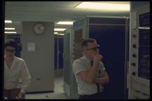
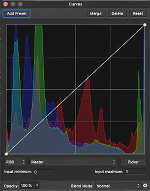
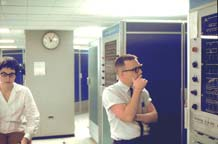
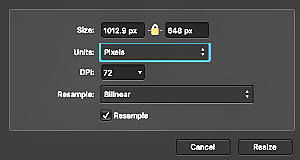
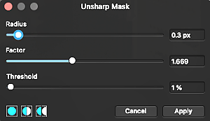
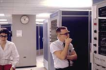

2024-09-01; version 4
How I Prepare Pictures for the Web With Affinity Photo
Here is the path through  Affinity Photo that I follow when preparing picture files for web pages,
starting from either a scanned image or a digital camera picture.
The tasks I need to carry out are:
Affinity Photo that I follow when preparing picture files for web pages,
starting from either a scanned image or a digital camera picture.
The tasks I need to carry out are:
- Read in a raw digital camera or scanned file.
- Convert and enhance the file for web use by
- Cropping and resizing
- Straightening
- Correcting perspective
- Correcting lens distortion
- Adjusting color, brightness and contrast
- Removing unwanted elements
- Sharpening
- Write out a file for use on the Web. (Sometimes both 1X and 2X versions.)
Affinity Photo has many features I don't use: some I don't need, others I haven't learned. These steps are what I have learned so far, by trial and error.
This note is based on Affinity Photo 2.1.1.
Affinity was just sold to Canva in March 2024. Canva has committed to not changing over to subscription licenses. Hope this holds up.
I used Adobe Photoshop to create graphics for web pages starting in 1994. I switched to Affinity Photo on the Macintosh in 2019 when Adobe insisted on selling Photoshop as subscription-only.
Steps
Here are the steps I use:
-
Open the picture in Affinity Photo.

Original image from a PhotoCD. This one is so dark I can't see to crop or straighten
-
The application opens up in the "Persona." This seems to be adequate for photo enhancing. If you need to operate on RAW format files you use the Persona.
For my camera, the application automatically detects my lens and zoom range from the EXIF data and compensates for lens-related barrel or pincushion distortion, and shows the camera in the heading bar above the picture. Supported lenses are listed at https://lensfun.sourceforge.net/lenslist/.
-
Straighten: I often have trouble keeping the horizon level in my photos. Choose the tool and click the button in the heading bar. Then draw a horizontal or vertical line. Then click .
-
Fix Perspective Distortion: (if necessary) This can occur if a photo isn't taken exactly square on to the subject. From the menus, choose , or use the Perspective tool in the left sidebar. Drag the corner handles to square up the picture.
-
Crop the picture to focus on its strong points using the Crop tool in the left sidebar. I had to crop the example image because the PhotoCD image had fuzzy edges.
Straightening or Perspective fixes may create some light checkerboard areas on the edges: You can trim them off by cropping (select to preserve the picture proportions) or use "inpainting" to fill them in. (The Affinity tutorial on Macros tells how to make a macro that does the inpainting. Check to make sure it worked.)
-
Curves. The right panel has a histogram and then a list of s. I use Curves to fix brightness, contrast, and black point. Clicking causes a panel to pop up, sort of like the Photoshop version, showing a histogram of the picture and a diagonal line, the curve. Clicking on the curve creates a dot that can be dragged with the mouse to change the curve shape. If there are parts on the right where the histogram is zero or almost zero, pull the upper right corner to the left to eliminate these values from the gamut. If there are parts on the left where the histogram is zero or almost zero, pull the lower left corner to the right to eliminate these values from the gamut. This operation is basically the equivalent of an Auto Levels operation.
To bring out detail in the middle tones of a picture, lightening the whole picture at the expense of some detail in the highlights and shadows, pull the center of the curve up and to the left, making the curve into a concave-downward shape. This is often good for snapshots and flash pictures.
To increase the contrast in a picture, making the light areas lighter and the darks darker, making the curve take an s-shape by pinning the center and then pulling the upper half up. I use this to make shapes and patterns more dramatic.

Curves control panel after adjustment.
Use the tool very cautiously.. a little motion has a big effect.
When done, Click .

The picture after straightening, cropping, and curves.
-
Other editing. At this point, before resizing, do any other fixes that the image needs. You might try the Vibrance tool. To remove scanner dust, an unwanted wire, blemish, or background from the picture, use the many tools Affinity Photo provides. The Clone tool is especially useful here.
-
(At this point im my Photoshop pattern I invoke an Action that resizes and sharpens a photo. I have one for landscape photos and one for portrait orientation. Unfortunately, the way Affinity Photo's Macro facility works, I can't define the macros I want.)
-
Size the picture. Use to resize the picture. Tell it to resample and use Bicubic sampling. Resizing should be done after the Curves operation, so that resampling will have an easier job. (Don't try to take a little picture and resize it bigger.) Set the Units to pixels, make sure the lock between dimensions is clicked, and then input the width or height in pixels.. the other dimension will be calculated. See below for information on sizing pictures so they will look good on High DPI screens (do the 2x size first).

Resize Document control panel.
-
Clarity. enhances color contrast in the midtones. (There is a nice video tutorial on it.)
-
Sharpen. Resizing may make the picture look blurry. Use and try different strengths.

Unsharp Mask control panel.
-
Export the picture. Choose and choose the output directory and file name. Use Bicubic sampling. I save my gallery pictures as JPEGs, usually 100 quality. If you are saving two versions for High DPI, go back to step 9.
-
Don't wipe out the original. Close the window and when it says the file was modified, choose "Don't Save".

on a hi-res display this should look sharper. See below.
Other Editing Tools
Contrast, Saturation, Vibrance
Some pictures scanned from film look washed out and are improved by increasing the contrast and color saturation a little. The adjustment panel also has a slider.
Selections
It is possible to select just part of an image and apply different corrections to individual parts. One of the advice sites cautions that this may produce pictures that look unnatural: human perception is quite sensitive to mismatches between parts of a picture that should have the same illumination.
Output Files
Image Data
The .jpg files resulting from these editing steps in Affinity are different from those from Photoshop.
Compression is different between Affinity Photo and Photoshop. For one quality 60 file, the Affinity output file is 95051 bytes; the Photoshop version is 142448.
Metadata
I installed exiftool and jhead on my computer to investigate the metadata.
Affinity Photo's Export function does not strip EXIF metadata out of its output image the way Photoshop's "Save For Web and Devices" does. The exiftool output for Affinity images lists 123 values. For the same image from Photoshop, there are only 40 values.
I had set up Photoshop to add an IPTC comment with my name and copyright.. I forget how.
Affinity Photo does not have this ability, but
I can add copyright to my Affinity files with a shell command like
exiftool -artist="thvv@multicians.org" -copyright="(c) `date +%Y` Tom Van Vleck" filename.jpg
Image Thumbnails
For photo gallery pages, I often want a small thumbnail that image the user can click to open a big one.
I make thumbnails with  ImageMagick, a powerful package that contains many useful picture whacking tools:
in particular, it provides the magick command, which I use as follows:
ImageMagick, a powerful package that contains many useful picture whacking tools:
in particular, it provides the magick command, which I use as follows:
magick -thumbnail x300 -resize '300x<' -resize 50% -gravity "center" -crop "150x150+0+0" "-unsharp 0x6+0.5+0" +repage "blah.jpg" ../thumbs/"blah.jpg"
I generate 150x150 thumbnails and show them in a 75x75 pixel space so the thumbnails look crisp on a retina screen.
To make an image look sharper on computers with a higher-resolution display
When I can, I create two versions from an image, one with picture dimensions twice the size of the picture's display area: see "High DPI Pictures". Basically, save your picture with lots of pixels, and display it in a container with half the CSS dimensions. Web browsers will figure out how to make it look crisp, and load whichever file is needed. In Affinity Photo, when I get to step 12, I export the file twice: first as the -2X version and then go back to step 9 and create a -1X version, and export it. I do this by resizing the image to -2x, exporting as e.g. "dog-2x.jpg", then resizing the image to half size and exporting as e.g. "dog.jpg".
Copyright (c) 2019-2024 by Tom Van Vleck.